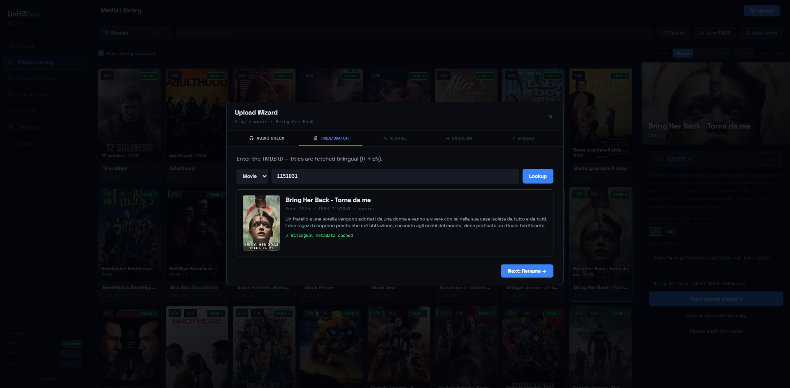
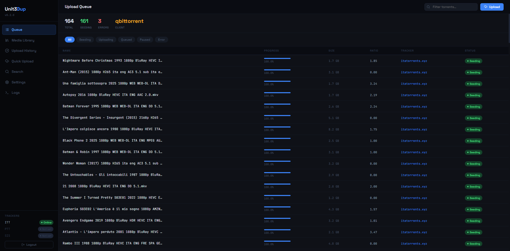
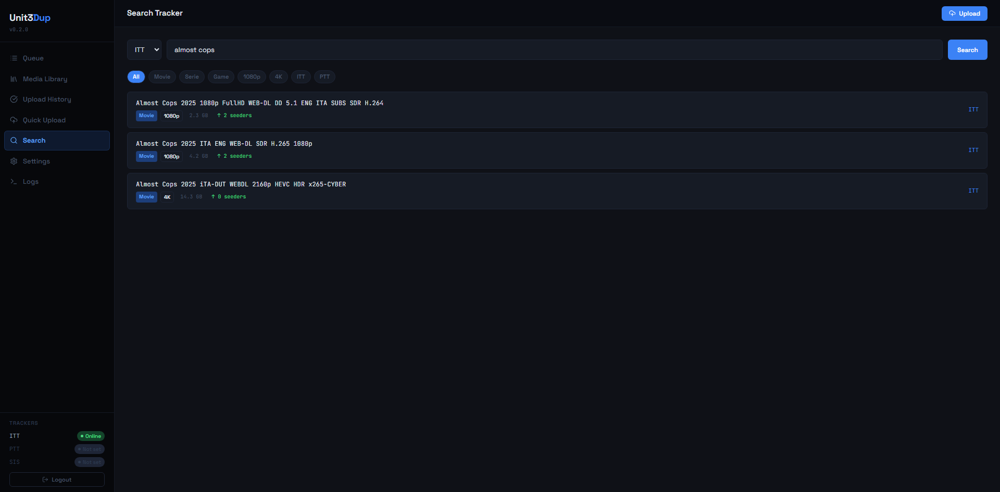
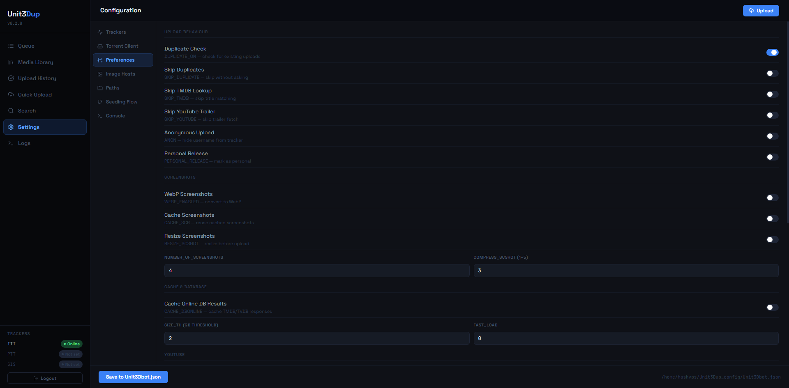

Uso › Web UI¶
La Web UI è una SPA React servita da FastAPI. Copre l'intero workflow di pre-flight Unit3D dal browser: scansione libreria, upload guidato, coda torrent, storico, configurazione, log in tempo reale, integrazione live con Unit3DWebUp. Disponibile in italiano e inglese (selettore nella TopBar).
Avvio:
Apri l'URL risultante (http://<U3DP_HOST>:<U3DP_PORT><U3DP_ROOT_PATH>, default http://127.0.0.1:8765). Assicurati che Unit3DWebUp sia in ascolto su WEBUP_URL (default 127.0.0.1:8000).
Login¶
Schermata iniziale: campo password. Credenziali validate contro U3DP_PASSWORD_HASH (bcrypt). La sessione è firmata con U3DP_SECRET (itsdangerous) e dura finché il browser mantiene il cookie.
Middleware order
Dietro le quinte: SessionMiddleware deve essere aggiunto dopo il middleware auth (LIFO = l'ultimo è l'outermost). Se vedi AssertionError: SessionMiddleware must be installed, è un bug — apri un issue.
Media Library¶

Lista le categorie (sottocartelle di U3DP_MEDIA_ROOT) e gli item al loro interno.
Funzionalità:
- Dropdown categoria — auto-scoperte (
GET /api/library/categories). Non hardcoded. - Lista item — ogni riga mostra titolo, anno (se da TMDB), dimensione totale, lingue audio rilevate.
- Ordinamento — nome, anno, dimensione.
- Ricerca — filtro live sul nome.
- Nascondi uploadati — toggle controllato da
W_HIDE_UPLOADED. - Nascondi senza ITA — toggle controllato da
W_HIDE_NO_ITALIAN. - Detail panel — click su un item apre un panel laterale (mobile: overlay a tutto schermo) con file list, match TMDB, azioni.
- Rescan lingue audio — bottone che stream-a via SSE la scansione
pymediainfoaggiornando la cache. - Match TMDB manuale — campo per inserire un ID, bottone cerca con preview risultati.
- Selezione multipla — checkbox su ogni item; action bar con "Seleziona tutto", "Deseleziona", "Marca come caricato" per operazioni in blocco.
- Filtro tipo — toggle per mostrare solo film (
kind === 'movie'), nascondendo serie e stagioni. - Mark uploaded a tutti i livelli — per le serie: intera serie, singola stagione, singolo episodio.
Endpoint coinvolti: GET /api/library/categories, GET /api/library/{category}, GET /api/library/{category}/{item}, POST /api/library/{category}/{item}/langs, POST /api/tmdb/search, POST /api/tmdb/fetch.
Upload Wizard¶

Flusso guidato in step. Alternativa alla CLI con storico persistente, progress bar grafica e log live SSE.
Step tipici:
- Seleziona sorgente — file o cartella sotto
U3DP_MEDIA_ROOT. - Check audio — se
W_AUDIO_CHECK, scansiona le tracce. - TMDB — ricerca o inserimento ID. Se
W_AUTO_TMDB, auto-fetch da ID esistente. - Preview nome — editabile; se
W_CONFIRM_NAMESè OFF, salta la conferma. - Controllo duplicati — se
W_DUPLICATE_CHECK(default ON), interroga l'API ITT prima dell'hardlink. Se trova un torrent con la stessa dimensione esatta, mostra un pannello giallo (vedi sotto). Saltato per i season pack. - Hardlink — in
U3DP_SEEDINGS_DIR/.unit3dprep/<jobid>/...(sandbox per-upload, vedi Integrazione Unit3DWebUp). SeW_HARDLINK_ONLY, termina qui e registra exit code0. - Upload — il bridge HTTP esegue
setenv → scan → maketorrent → upload → seedsu Unit3DWebUp e stream-a log + progress al frontend via SSE (GET /api/wizard/{tok}/upload). Phase weights mostrati in barra: setenv 3% / scan 27% / maketorrent 45% / upload 15% / seed 10%. - Registrazione storico —
update_exit_code(seeding_path, code)scrive inU3DP_DB_PATH(anche suwizard_finishquandoW_HARDLINK_ONLY=1, exit code 0).
Controllo duplicati pre-upload¶
Replica il comportamento del vecchio unit3dup CLI: prima di creare il .torrent, il bridge chiama GET <ITT_URL>/api/torrents/filter?tmdbId=<id>&api_token=<key> e confronta data[].attributes.size byte-per-byte con la dimensione del file locale. Match esatto → pannello giallo con:
- Nome, dimensione, tipo/risoluzione, uploader, seeders/leechers, data creazione;
- Link "Apri sul tracker" alla pagina dei dettagli;
- "Carica comunque" → procede con hardlink + upload (utile se si tratta di una re-release legittima o di un'altra fonte);
- "Annulla" → registra una entry nello storico con status
⏭ duplicato skippato, nasconde l'item dalla Media Library (source_pathfinisce inuploaded_paths), e termina il wizard senza creare l'hardlink.
Webup 0.0.25 NON implementa duplicate detection (DUPLICATE_ON/SKIP_DUPLICATE sono # Todo Not yet implemented upstream): il check è eseguito dal bridge unit3dprep e funziona solo su kind=movie e kind=episode. Per i season pack la somma totale dei byte non corrisponde a nessun singolo torrent sul tracker, quindi il check viene saltato.
Best-effort: se l'API ITT è irraggiungibile o ritorna un errore, il check viene saltato silenziosamente e l'upload prosegue normalmente. Disabilitabile globalmente da Settings → Default wizard → Controllo duplicati sul tracker.
Quick upload¶
POST /api/upload/quick salta gran parte del wizard per utenti esperti: ricevi direttamente un job ID e consumi GET /api/upload/{job}/stream. Usalo se hai già file rinominati in ~/seedings/. Il flow chiama stream_webup direttamente, senza pre-flight di unit3dprep.
Dry-run¶
Se U3DP_DRY_RUN_TRACKER=1, il wizard salta /upload ma esegue tutto il resto. Utile in dev/WSL.
Upload Queue¶

Mostra i torrent attivi nel client configurato (TORRENT_CLIENT nel .env: qbittorrent, transmission, rtorrent).
- Filtro per nome e per stato (downloading, seeding, paused, error).
- Refresh automatico.
- Link ai file locali.
Endpoint: GET /api/queue. Credenziali client lette dalle chiavi QBIT_* / TRASM_* / RTORR_* del .env condiviso.
Uploaded (storico)¶
Tabella degli upload completati (GET /api/uploaded). Campi:
- Path locale in
~/seedings/. - Stato del record:
✓ exit 0— upload completato regolarmente.✗ exit N— fallito col codice indicato.pending— exit code mai registrato (vedi nota qui sotto).manual—W_HARDLINK_ONLY=1(solo hardlink, niente upload).⏭ duplicato skippato— l'utente ha annullato dopo che il controllo duplicati ha trovato un torrent con la stessa dimensione esatta. Ilduplicate_info(id, nome, link tracker, ecc.) è persistito nel DB per audit.
- Tracker di destinazione.
- Timestamp.
- Dimensione.
- Ricerca e filtro.
Stat card in cima: Totale, Completati, Falliti, Hardlink only, Duplicati skippati.
Su mobile la tabella ha overflow-x:auto con min-width:820px per garantire leggibilità su schermi stretti.
Record pending che non si chiudono
Se un record rimane pending dopo un upload riuscito, significa che l'endpoint non ha chiamato update_exit_code. È un bug noto in caso di modifiche a quickupload.py o wizard.py — vedi Troubleshooting.
Search Tracker¶

Ricerca un torrent su ITT (sempre) e su PTT/SIS (se configurati con URL + API key valide nel .env).
- Tab per tracker.
- Mostra link, dimensione, seeders, freeleech, data upload.
- Utile per duplicate-check prima di caricare.
Endpoint: GET /api/trackers (status) + GET /api/search?q=.... Sotto il cofano POST /api/webup/filter proxia Unit3DWebUp /filter.
Stato tracker
Un tracker appare "Online" solo se URL e API key sono entrambi settati e la API key non è il placeholder "no_key". I tracker nella sidebar sono tutti elencati, anche quelli non configurati (badge grigio "Not set").
Settings¶

Editor completo del .env condiviso direttamente dal browser. Ogni Save:
- scrive atomico in
$ENVPATH/.env(nomenclatura canonicaTRACKER__* / TORRENT__* / PREFS__*su disco); - propaga le chiavi modificate a Unit3DWebUp via
POST /setenv(no restart richiesto).
Sezioni:
- Tracker — URL, API key, PID per ITT / PTT / SIS; lista
MULTI_TRACKER. - Metadata — TMDB, TVDB, IGDB, YouTube.
- Torrent client — tipo + credenziali (qBit / Transmission / rTorrent).
- Image host — ordine preferenza + API key per PTSCREENS, PASSIMA, IMGBB, IMGFI, ecc. L'ordine nella lista è proiettato in
PREFS__<HOST>_PRIORITY(1, 2, …, 99 per host non in lista). - Opzioni upload —
ANON,PERSONAL_RELEASE,NUMBER_OF_SCREENSHOTS,COMPRESS_SCSHOT,TAG_ORDER_*, ecc. - Seeding Flow —
U3DP_*con valori effettivi (env vs file) viaenv_runtime(). Read-only perUNIT3DUP_CONFIG. - Versione — vedi sezione dedicata.
- App Auto-Update —
U3DP_SYSTEMD_UNIT, nome systemd user unit usata dal bottone "Update app" per il restart post-aggiornamento. Defaultunit3dprep-web.service; override solo se la tua unit ha un nome diverso. - Wizard Defaults — tutte le
W_*. - Interface — selettore lingua (IT / EN); preferenza salvata in
localStoragee sincronizzata conU3DP_LANGviaPUT /api/settings.
Secret mascherati come __SET__ — il campo appare riempito. Modificare altre chiavi non cancella i secret.
Endpoint: GET /api/settings, PUT /api/settings, GET /api/settings/fs-check.
Mobile: la nav a sinistra diventa una riga orizzontale scrollabile; le griglie 2-col collassano in 1-col.
Versione e auto-update¶
In Settings › Versione trovi due card affiancate:
- App — versione corrente (
importlib.metadataopyproject.tomlin modalità git) vs ultima release GitHub. - Unit3DWebUp — versione installata nel venv di webup vs ultima su PyPI.
Ogni card espone:
- Pulsante Controlla aggiornamenti (force
POST /api/version/refresh— bypassa cache 10 min). - Pulsante Installa aggiornamento (visibile solo se
newer == true). - Accordion Changelog con il body della release GitHub (per app) o link a PyPI (per webup).
Click su Installa:
- Modal
UpdateProgressModalcon logpip/gitlive-streamed via SSE (GET /api/version/update/{app|webup}/stream). - Backend invalida
_cachedi/api/version/infosudone, riavvia systemd in scope transient (systemd-run --user --on-active=3s). - Countdown 5s + reload del browser; popup post-reload con il changelog (chiave
unit3dprep.pendingChangelogin localStorage).
EventSource auto-riconnette
Se un endpoint SSE chiude la connessione (es. dopo systemctl restart), il browser ripete la richiesta → re-esecuzione dell'endpoint. Il modal chiama closeSSE() su done/error per evitare il loop. Se modifichi il modal, mantieni questo invariante.
Endpoint: GET /api/version/info, GET /api/version/changelog?v=X, GET /api/version/update/{app|webup}/stream (SSE), POST /api/version/refresh.
Health Unit3DWebUp¶
In Settings › Tracker (o sezione Integrazioni a seconda del rendering) compare la card Unit3DWebUp:
- Stato
online/offline(cache 5s, ping aWEBUP_URL/setting). - Versione installata.
- Latenza ping in ms.
- Indicatore WebSocket (connessione attiva al canale eventi del bot).
- Pulsante "Spingi config" — esegue
POST /api/webup/sync(push di tutto il payload.envmappato a webup, utile dopo ripristino backup o se sospetti drift). - Pulsante "Aggiorna" — link rapido alla card Versione.
Endpoint: GET /api/webup/health, POST /api/webup/sync, GET /api/webup/setting.
Logs¶
Stream log in tempo reale via SSE. Tutto ciò che uvicorn / l'app scrive su logbuf (unit3dprep/web/logbuf.py) arriva qui, classificato per:
- source —
app,wizard,quickupload,webup(rimpiazzaunit3duplegacy),system. - kind —
info/ok/warn/error/progress.
Filtri persistiti in localStorage (chiavi unit3dprep.logs.{hiddenSources,hiddenKinds,autoScroll}).
Utile per debugging senza aprire una shell sul VPS.
Note mobile (≤768px)¶
La UI è responsive:
- Sidebar — si chiude in
translateX(-100%), scrim overlay quando aperta. - Modal — full-bleed con padding 14px.
- Library detail — overlay
position:fixed; inset:0invece del panel laterale da 360px. - Settings nav — riga orizzontale scrollabile.
- Tabelle —
overflow-x:auto.
Breakpoint gestito da isMobile (App.tsx → Sidebar / TopBar / Library / Settings via props).
Bisogni accesso programmatico?¶
Tutte le view della UI consumano l'API JSON sotto {U3DP_ROOT_PATH}/api/*. Puoi chiamarla direttamente con cookie di sessione valido. Vedi unit3dprep/web/api/*.py per la lista completa dei router (settings, version, webup, library, queue, uploaded, search, tmdb, fs).